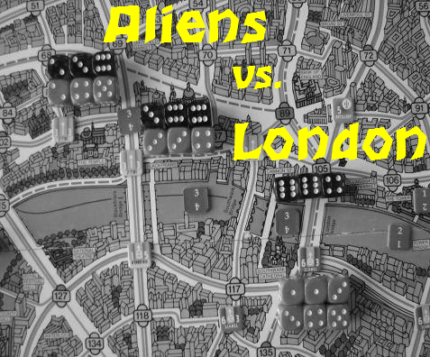

 |
ALIENS vs. LONDON (AvL)ist ein Sci-Fi Spielsystem. Ausserirdische haben sich vor Jahrhunderten in der Themse eingenistet, sind aber bei Bauarbeiten im Untergrund erwacht. Ihr Ziel: die Brutstätten in London beschützen, Tod und Zerstörung in die europäische Hauptstadt bringen und anschließend die Invasion des ganzen Planeten. Können sie gestoppt werden?Spielidee: Gerald Zabos |